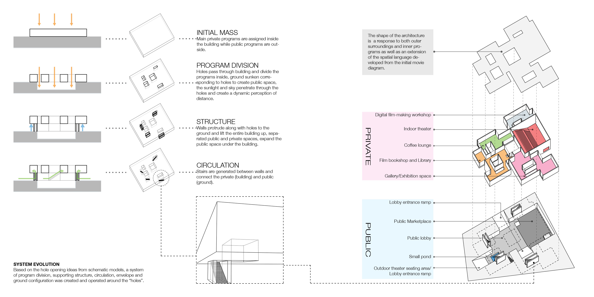

Union Square Hub
Community Film Archive and Culture Center
Career Discovery Design Studio, Harvard Graduate School of Design
Critic: Jose Mayoral Moratilla
Personal Project
The intent of this project is to invent a public site and architecture that represent the film archive and cinema as an open cultural center that both define programs, identity and as a way to revitalize the union square. The strategy is to bring people to the site by creating unique experiences of distance and an interesting dialogue between inside and outside.
The diagrammatic analysis of a two-minute chasing scene from “Resorvire Dogs” by Quentin Tarentino creates a system of visual notation to represent the relationship between mechanical movements of objects (Mr. Pink and cops) and camera. Thus the concept of perception of dynamic distance came up.
